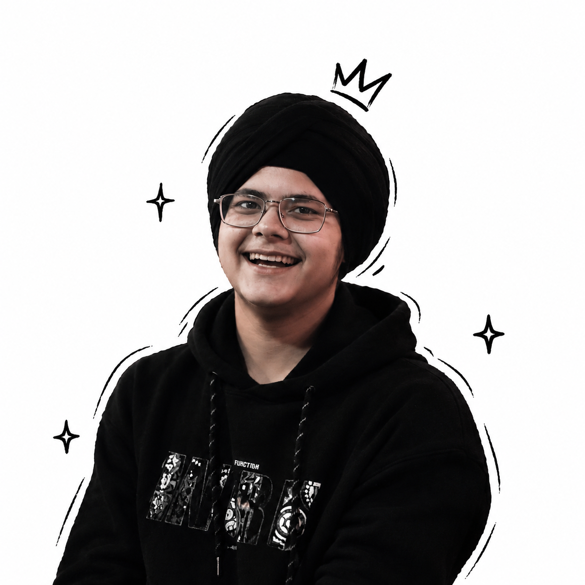

Look past the obvious.
I start with the person on the other side of the screen. Where is the friction? What is the real need?
Ethical hacker. AI developer.
Design thinker.
A security-first mind.
A creator’s instinct.
One connected perspective.

“Eyes are useless when
the mind is blind.”
I’m Gurnoor Singh—an ethical hacker by profession, a designer by soul, and a builder who connects the dots.
I look at a problem the way a customer experiences it: what feels confusing, what creates friction, and what would make life easier. Then I bring security, engineering and design together to build something that works in the real world.
Call me a polymath. I think like an owner, question the obvious, and look for smarter ways to reduce time and cost without losing the craft.
My work, skills & degree ↗One person. Different perspectives. Choose a discipline to step into the way I approach the work.
Movement should guide the eye. I use timing, transitions and graphic rhythm to make a message easier to feel and follow.
Before the edit, there is a decision about light, framing and what deserves attention. I look for a shot that serves the story.
The cut changes how a story feels. I shape the sequence, pace and pauses so the idea arrives clearly.
Typography, hierarchy and composition turn information into something people can understand and remember.
I begin with the audience: what they need, what holds their attention and what should happen next.
Security, AI and automation support the creative work. The systems should remove friction so more attention goes into the result.
Scroll through the decisions that connect my work.
I start with the person on the other side of the screen. Where is the friction? What is the real need?
A frame, a cut, a line of code or a piece of type. The medium follows the problem, not the other way around.
The story, the system and the experience should support each other. That is where the work becomes specific.
My role moved between technology, production and marketing—building the systems behind the work and shaping what the audience sees.
AI development, automation and web engineering.
Independent vulnerability research and reporting.
Red teaming · Cybersecurity · Vulnerability research · Security audits
Front end & back end development · AI development · Machine learning · Automation · Cloud computing
Motion graphics · Graphic design · Cinematography · Video editing · Digital marketing · SEO strategy · Copywriting · Lead generation
Crypto mining · Customer experience · Efficient systems
Cybersecurity specialisation · In progress · 2025–2029
English
Hindi
Punjabi